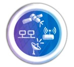

Galería


El Instituto Técnico Jesús María fue fundado el 25 de enero de 1991 con el objetivo de ofrecer una educación técnica de calidad a jóvenes del ámbito rural y urbano. Desde entonces, ha sido un referente en la educación técnica en el país. A lo largo de los años, ha formado a miles de jóvenes en diferentes áreas técnicas, como electrónica, telecomunicaciones, administración, computación y otros, brindándoles herramientas para el desarrollo profesional y personal.
El Instituto Técnico Jesús María ha crecido y se ha consolidado como una de las principales instituciones de formación técnica del país, ofreciendo una enseñanza integral que combina lo académico con lo práctico, preparándose para afrontar los desafíos del mundo laboral y la sociedad. A través de los años, el instituto ha mantenido su misión de promover el bienestar de los estudiantes, proporcionándoles los conocimientos y habilidades necesarias para que puedan desempeñarse con éxito en el mundo profesional.